Porcelain-fused-to-metal dental crowns (PFMs) have a metal shell on which is fused a veneer of
porcelain in a high heat oven. The metal provides strong compression and tensile strength,
and the porcelain gives the crown a white tooth-like appearance, suitable for front teeth restorations.
The most common method of crowning a tooth involves using a dental impression of a prepared
tooth by a dentist to fabricate the crown outside of the mouth. The crown can then be inserted
at a subsequent dental appointment. Using this indirect method of tooth restoration allows use
of strong restorative materials requiring time-consuming fabrication methods requiring intense heat,
such as casting metal or firing porcelain which would not be possible to complete inside the mouth.
Because of the expansion properties, the relatively similar material costs, and the cosmetic benefit,
many patients choose to have their crown fabricated with gold.
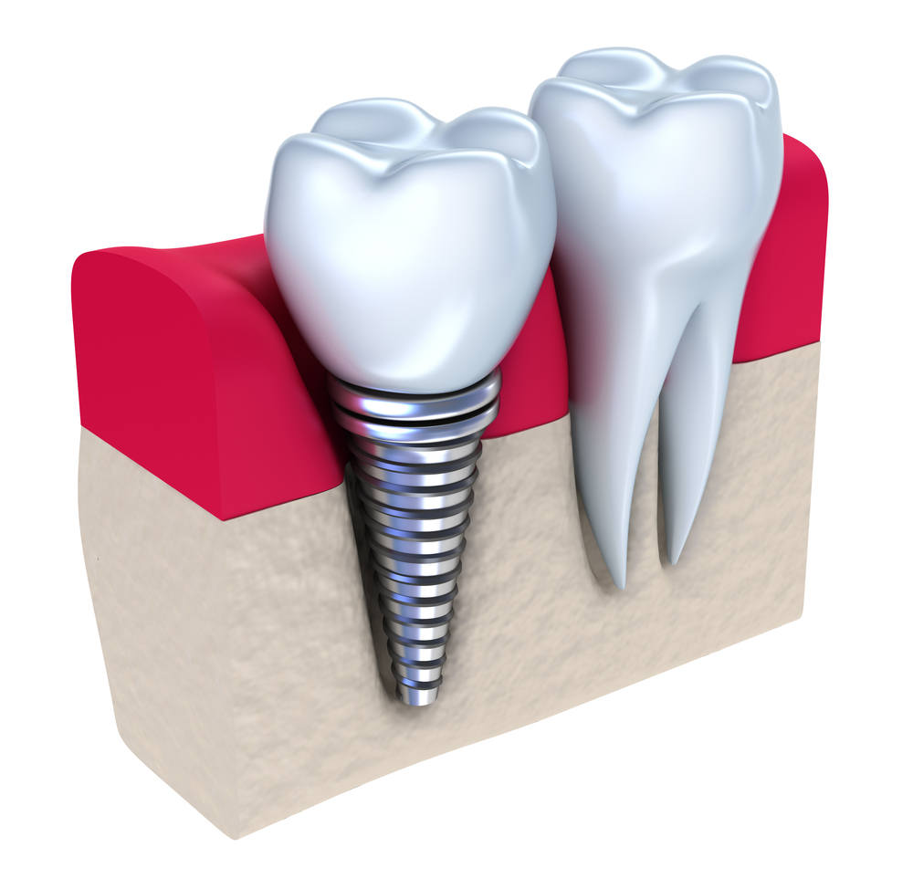
IMPLANTS. Overview. A dental implant is a titanium post (like a tooth root)
that is surgically positioned into the jawbone beneath the gum line that
allows your dentist to mount replacement teeth or a bridge into that area.
An implant doesn't come loose like a denture can.
Because implants fuse to your jawbone, they provide stable support for artificial teeth.
Dentures and bridges mounted to implants won't slip or shift in your mouth — an especially
important benefit when eating and speaking. This secure fit helps the dentures and bridges
as well as individual crowns placed over implants — feel more natural than conventional bridges or dentures.
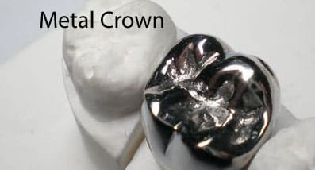
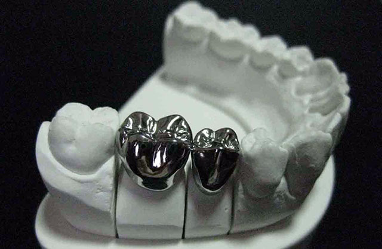
As we outline on this page below, each type of crown has its own unique
set of advantages and disadvantages, each of which must be weighed and
evaluated in light of the patient's specific situation.
No one kind universally makes the best choice for all circumstances.
Some types are better suited for certain kinds of teeth than others.
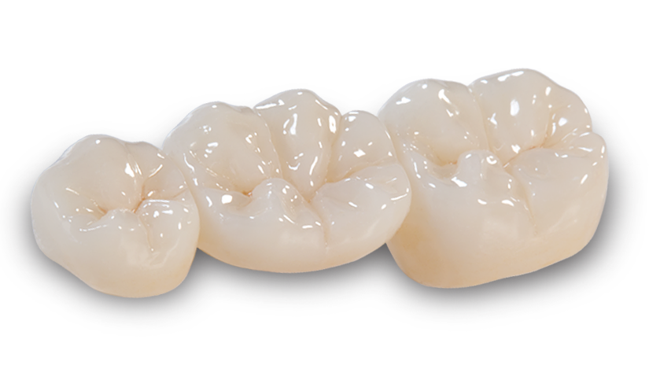
The most common method of crowning a tooth involves using a dental
impression of a prepared tooth by a dentist to fabricate the crown
outside of the mouth. The crown can then be inserted at a subsequent
dental appointment. Using this indirect method of tooth restoration
allows use of strong restorative materials requiring time-consuming
fabrication methods requiring intense heat, such as casting metal or
firing porcelain which would not be possible to complete inside the mouth.
Because of the expansion properties, the relatively similar material costs,
and the cosmetic benefit, many patients choose to have their crown fabricated with gold.
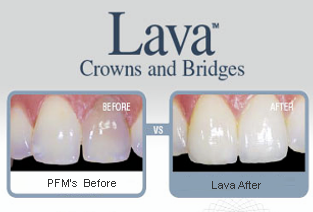
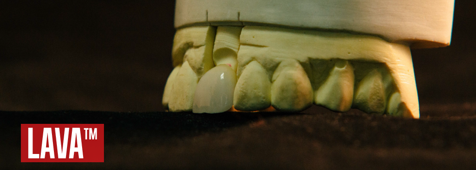
Lava™ All-Ceramic System from 3M™ uses innovative digital technology and
superior materials to help you produce high quality restorations for your patients.
Using the speed and precision of CAD/CAM technology, it creates all-ceramic crown
and bridge substructures with zirconia, an extremely strong, stable and fracture-resistant
ceramic material. Preparations require removal of less tooth structure, and cementation
accomodates even conventional techniques. Colorable frameworks that are thin and translucent
ensure a natural and vital appearance.
The result is efficient production of restorations with excellent esthetics, enduring strength
and precise fit.giving you one of the most durable and esthetic all-ceramic restorations available today.
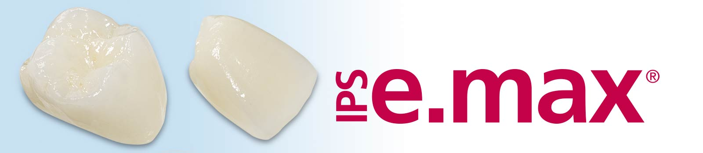
The E-Max crown is a type of all-ceramic crown which is preferred for
its longer lasting, aesthetic qualities. This crown and the Zirconia
crown are worn due to their highly attractive appearance which ensures
that they compliment the rest of your teeth.
It is considered a good option for damaged, stained or poor quality teeth.
This is a type of all-ceramic crown with an appealing translucent colour
which is combined with extra strength and durability.
This crown is made from a single block of lithium disilicate ceramic:
this is a top grade material which has been harvested for its toughness,
durability and opaque qualities which makes it a highly prized crown.
Plus it is considered a breakthrough in dental crown technology.
You get a glass ceramic crown which is tough and enduring but delicate in appearance.
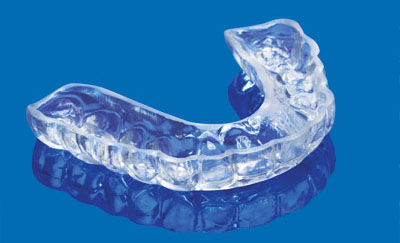
There are several ways to alleviate the effects of bruxism. One of the most common,
which your dentist may recommend, is a night guard. This is an appliance typically
worn while sleeping through the night, which is available without a prescription at
most pharmacies. To use the appliance, you simply boil it, let it cool for a few
seconds and then gently bite into it to shape it to your own teeth.
Night guards are also available through your dentist. Guards of this
type tend to be of a higher quality and superior fit, as they are made
in a special laboratory from an impression of your mouth carefully taken
by a dental professional. This is generally a more expensive device than
one purchased over-the-counter, but can be more comfortable to wear.
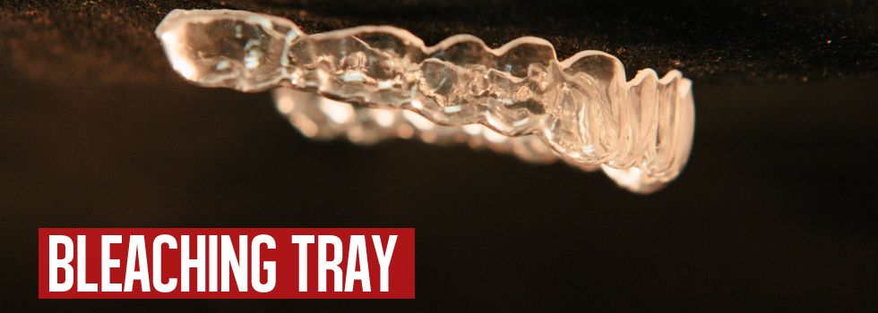
Tooth Whitening (bleaching) gel will only whiten natural teeth.
It will NOT bleach (whiten), nor harm bonding, caps, crowns, bridges,
fillings or any other artificial dental work. You may have to have the
dentistry redone in order to match your new white teeth. Tetracycline
(an antibiotic) stained teeth or grayish teeth are more difficult to bleach
and have a varied prognosis. Exposed root portion of teeth which occurs with gum
recession will also not bleach. If you have amalgam (silver) fillings in, near or
behind the front teeth, long term bleaching can cause the surrounding tooth to have
a greenish tinge. Bleaching teeth which have a lot of translucency (see thru) can cause
the teeth to become even more translucent and may give the tooth a darker appearance.
It is important to consult a dentist if you have any of the above concerns.
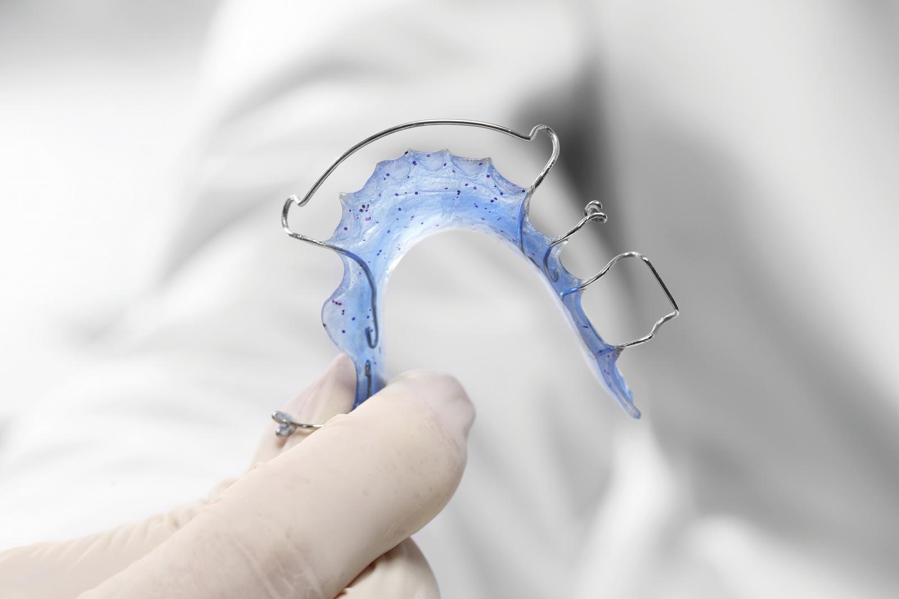
Tooth Whitening (bleaching) gel will only whiten natural teeth.
It will NOT bleach (whiten), nor harm bonding, caps, crowns, bridges,
fillings or any other artificial dental work. You may have to have the
dentistry redone in order to match your new white teeth. Tetracycline
(an antibiotic) stained teeth or grayish teeth are more difficult to bleach
and have a varied prognosis. Exposed root portion of teeth which occurs with gum
recession will also not bleach. If you have amalgam (silver) fillings in, near or
behind the front teeth, long term bleaching can cause the surrounding tooth to have
a greenish tinge. Bleaching teeth which have a lot of translucency (see thru) can cause
the teeth to become even more translucent and may give the tooth a darker appearance.
It is important to consult a dentist if you have any of the above concerns.
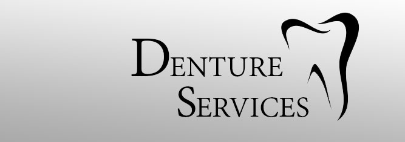
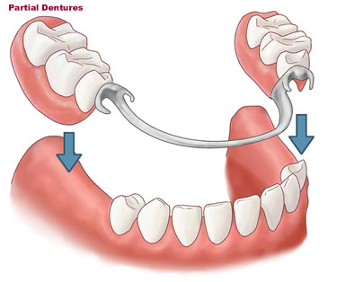
A denture is a removable replacement for missing teeth and surrounding tissues.
Two types of dentures are available -- complete and partial dentures.
Complete dentures are used when all the teeth are missing, while partial
dentures are used when some natural teeth remain.
There are two main types of dentures: full and partial.
Your dentist will help you choose the type of denture
that's best for you based on whether some or all of your
teeth are going to be replaced and the cost involved.